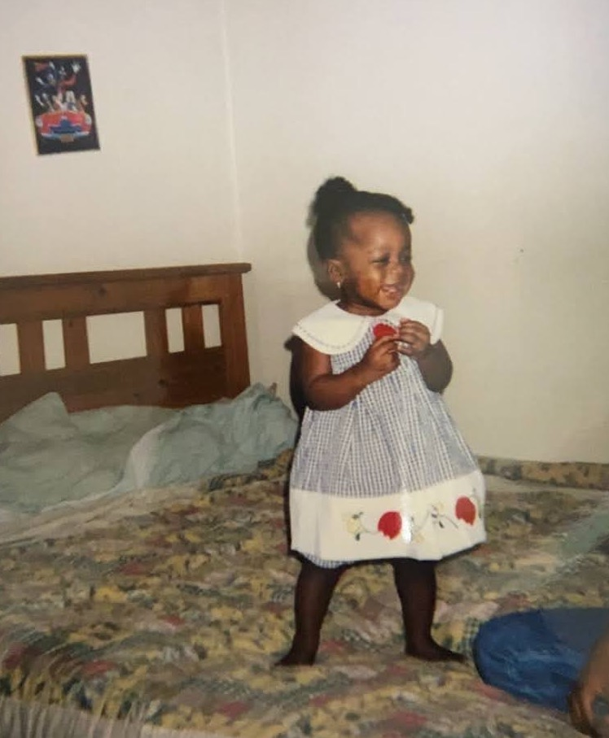
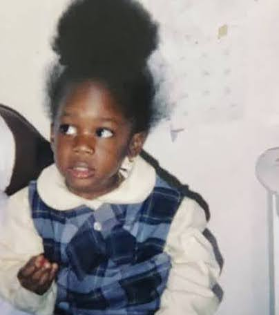
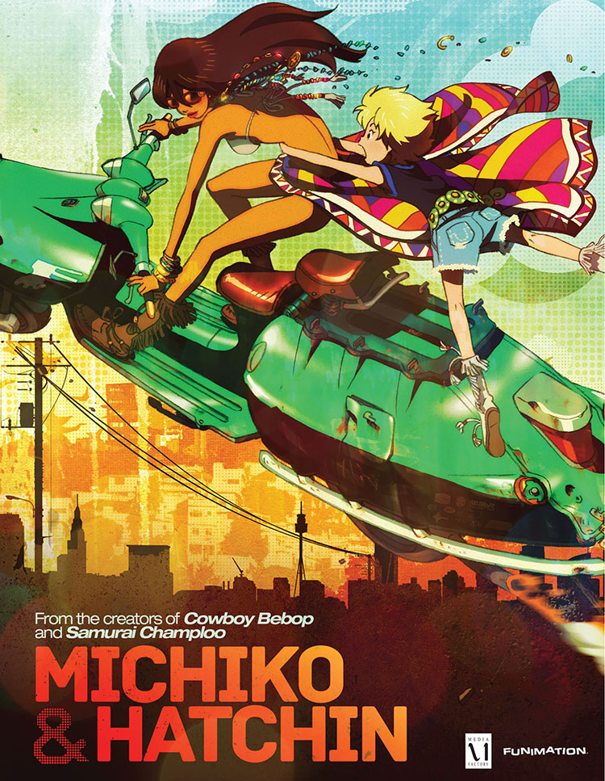
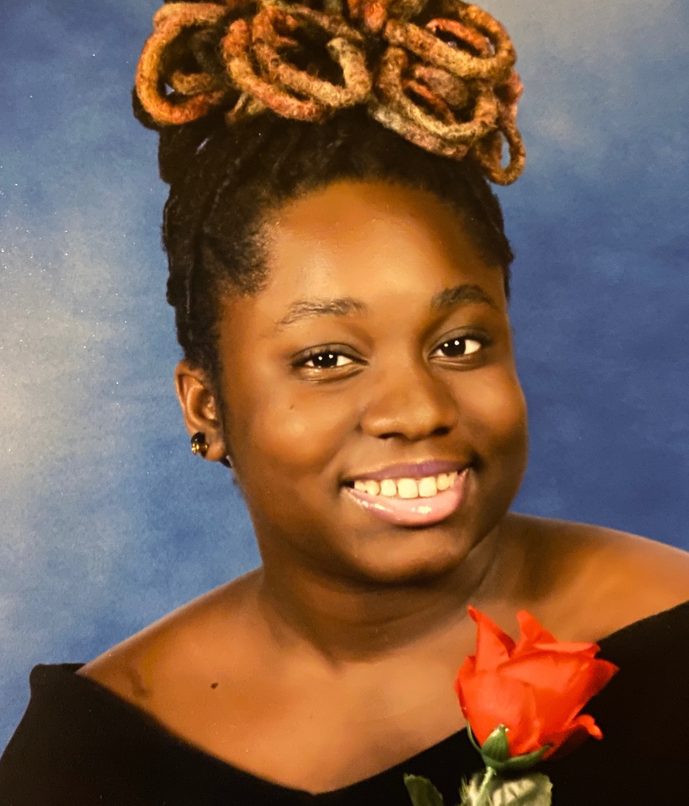
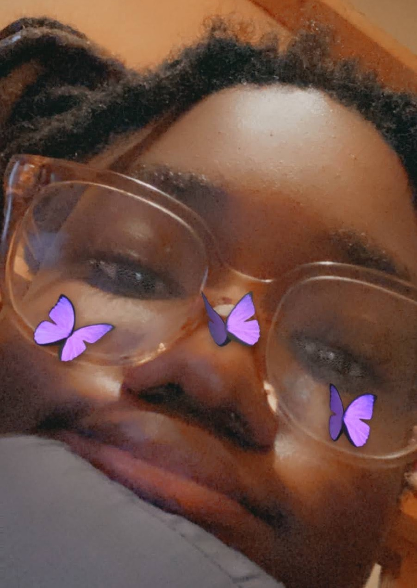

 My name is Ashanti Sease. I was born in Brooklyn, New York in Kings County Hospital on August 26th, 2002. I'm the youngest sibling on my mother's side of the family. And at the time, I was also the youngest sibling on my father's side of the family until my brother's were born in 2012 and 2014.
I started going to school the age of three and the schools I attended were PS. 361, Ps. 269, MS. 381, and Brooklyn Community Arts and Media High School.
 At the age of eight, school was hard. I felt like no matter how hard I tried at work, the teacher I had was never pleased and always called it garbage. I started getting into anime and the art style and that's were I got my passion for art. So, when I went into middle school, I started making an attempt to expand my artwork and draw better and applied to go to high school dedicated to art.
 When I got to my high school, it had nothing to do with art despite it being in the name. My school was more dedicated to funding the sports teams than any art programs we had, so I ended up giving up that dream of making art a full blown career. But around my junior year of high school, I decided that I could still incorporate my creativity in the form of technology and decided I'd go in a path of building inventions. I end up graduating my high school as salutatorian in June 2020. Well, virtually.
 Now, I attend NYC College of Technology and despite my switch in career paths during my junior year of high school, I still draw as a hobby and it's something I enjoy doing thouroughly. And it's something I still want to improve on.